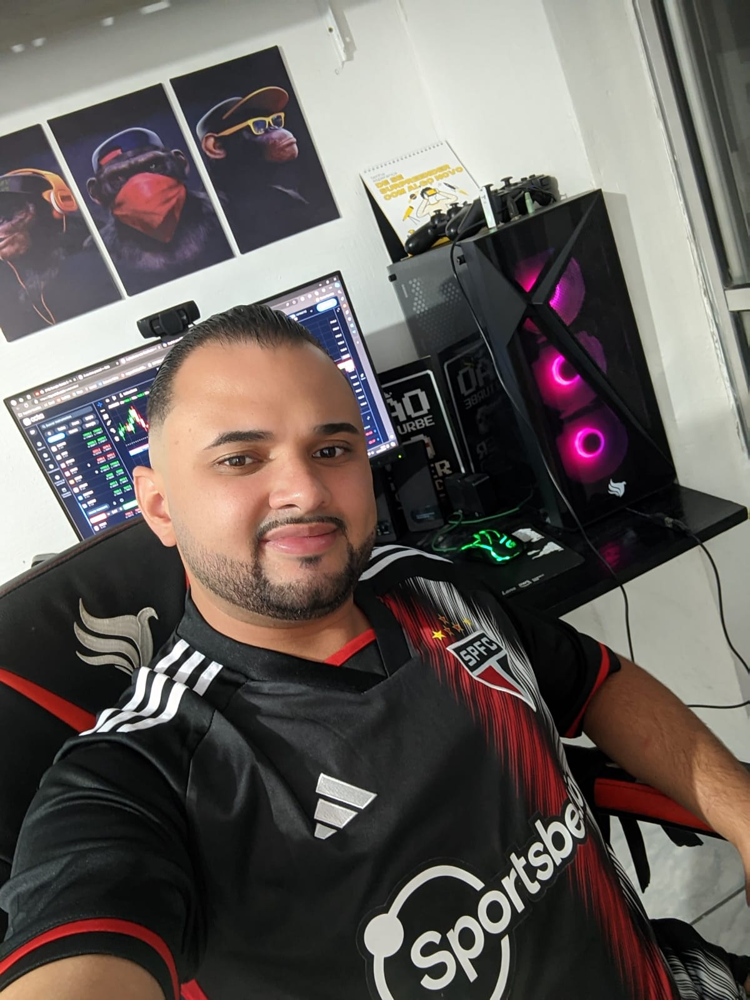

EDUARDO CAMARGO PAULINO.
HTML | CSS3 | JavaScript | Python | Graduando em Análise e Desenvolvimento de Sistemas (5º semestre), dedico meus estudos ao aprimoramento contínuo em desenvolvimento de software, com ênfase em Front-end e programação com Python. Tenho investido em cursos complementares voltados a tecnologias como HTML, CSS, JavaScript, MySQL e Linux, além de fundamentos em segurança da informação e boas práticas com Git/GitHub. Meu principal objetivo é atuar como desenvolvedor, aplicando meus conhecimentos em projetos reais, evoluindo tecnicamente e contribuindo ativamente para equipes colaborativas e inovadoras. Sou uma pessoa dedicada, curiosa e comprometida com a qualidade daquilo que me proponho a fazer. Gosto de transformar desafios em aprendizado e acredito no poder do conhecimento compartilhado para construir soluções eficientes.
MINHAS ESPECIALIDADES.
PYTHON
Estudando Python em ambiente Linux para aprimorar conhecimento em ambos.
LINUX
Linux para aprimorar conhecimento.
TRADER
"Exploro padrões de mercado como hobby, sempre em busca de insight e evolução pessoal."
HTML5
"Estou aprendendo HTML, a linguagem responsável por estruturar o conteúdo das páginas web."
CSS3
"O CSS é a ferramenta que estou estudando para estilizar e dar vida visual às páginas."
JAVASCRIPT
"JavaScript é a linguagem que estou explorando para tornar os sites interativos e dinâmicos."

MUITO PRAZER,SOU EDUARDO CAMARGO
Me chamo Eduardo Camargo Paulino, tenho 28 anos e sou de Taboão da Serra, São Paulo. Minha jornada começou no mercado financeiro, onde atuei por cerca de quatro anos com análise estratégica e tomada de decisões. Essa vivência me ensinou a pensar com lógica, trabalhar sob pressão e lidar com riscos de forma estruturada — habilidades que hoje aplico no universo da tecnologia. Há três anos, transformei minha curiosidade em carreira. Comecei explorando Python, me aprofundei em segurança da informação e desenvolvimento front-end, e construí uma base sólida com HTML, CSS, JavaScript, Linux, MySQL e boas práticas com Git/GitHub. Essa base evoluiu para projetos práticos que combinam tecnologia, inovação e colaboração. Atualmente estou no quinto semestre da graduação em Análise e Desenvolvimento de Sistemas, com foco em desenvolvimento de software — especialmente front-end e programação em Python. Sou movido por aprendizado contínuo e reforço meus conhecimentos com cursos complementares e experiências práticas.
Sou curioso, dedicado e comprometido com qualidade. Encaro desafios como oportunidades, acredito na força das ideias e vejo a tecnologia como uma ponte entre estratégia e inovação. Para mim, cada projeto é como montar um grande quebra-cabeça — e eu quero estar entre os que ajudam a conectar as peças.
Domino tecnologias como:
🐍 Python para automações, scripts e APIs
🌐 HTML, CSS, JavaScript no desenvolvimento de interfaces
🐧 Linux no dia a dia de desenvolvimento e servidores
🔄 Git/GitHub com boas práticas de versionamento e colaboração